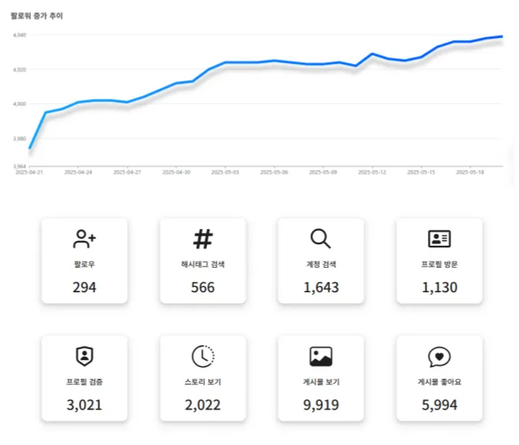
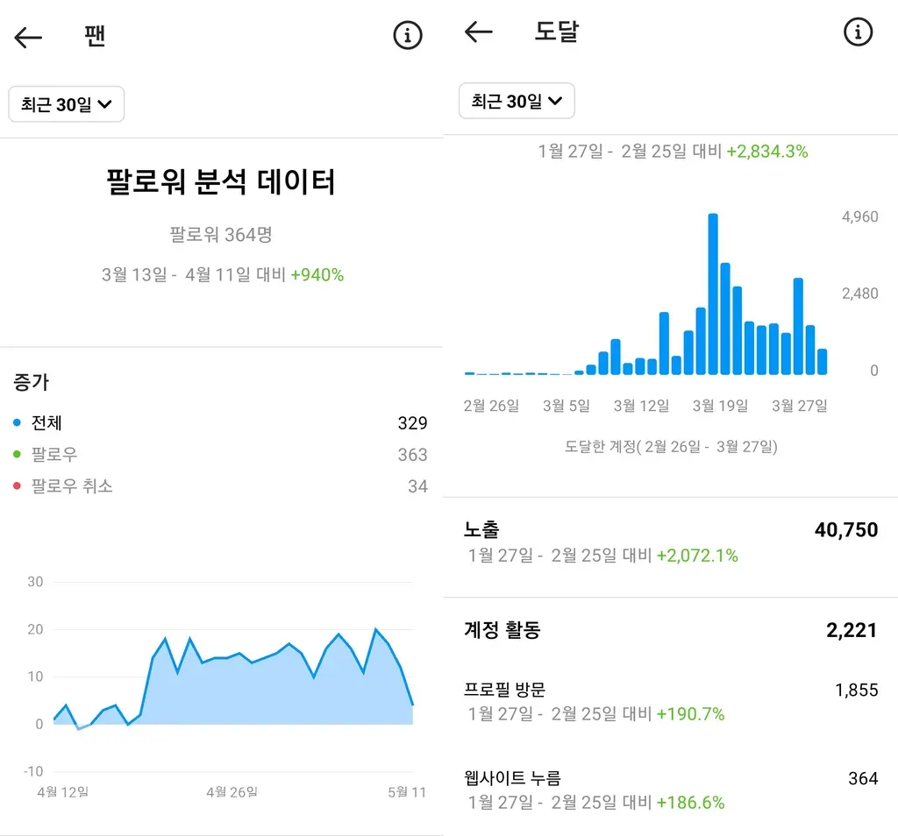

[계정 최적화]
콘텐츠가 좋아도 노출이 안 되는 이유, '활동량'에 있습니다.
인스타그램 알고리즘이 계정을 평가하고 노출을 결정하는 가장 중요한 척도는 '활동량'입니다...
하지만 본업과 계정 관리를 병행하며 24시간 소통 활동을 유지하기란...

"24시간 쉬지 않고 일하는 스마트한 디지털 영업사원을 고용하세요."

[작업 레포트] [인사이트 유입량의 변화]
광고주님의 운영 목적에 맞는 슬롯을 선택하세요.
| 구분 | 최적화 슬롯 (Standard) | 최적화 라이트 슬롯 (Lite) |
|---|---|---|
| 핵심 목적 | 활동량 증가 + 신규 유입 + 인지도 상승 | 활동량 유지 + 지수 저하 방지 |
| 주요 대상 | 공격적인 확장과 팔로워 성장이 필요한 계정 | 기존 팔로워 관리와 안정적인 운영이 필요한 계정 |
| 작업 범위 | 관심사 기반 잠재고객 탐색 및 소통 활동 | 현재 팔로잉 중인 사용자 위주의 소통 활동 |
| 판매가 | 150,000원 | 60,000원 |
두 상품의 핵심 차이는 '외부 타겟 발굴(신규 유입)' 여부에 있습니다.
| 작업 항목 | 최적화 슬롯 (Standard) | 라이트 슬롯 (Lite) |
|---|---|---|
| 해시태그 / 계정 탐색 | O | X |
| 신규 타겟 방문 및 소통 | O | X |
| 신규 팔로우 / 언팔로우 | O | X |
| 기존 팔로워 소통 | O | O |
| 품앗이 활동 | O | O |
운영 목적 및 계정 현황 파악
최적화 작업 신청서(구글폼) 제출 — 수집된 정보는 효과적인 타깃 선정을 위해 활용됩니다.
선택한 슬롯 결제 진행
24시간 자동 활동 작업 시작
시작일 기준 2주차 / 4주차에 상세 리포트 제공
종료 후 테스트 키워드 + 테스트 콘텐츠로 효과 검증
자동 작업 진행을 위해 2단계 인증을 반드시 비활성화해 주세요.
인사이트 데이터 확인 및 레포트 작성을 위해 프로페셔널 계정으로 전환해 주세요.
계정 설정에서 '검토를 위해 플래그 지정' 옵션을 OFF로 설정해 주세요.